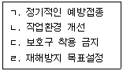

미용사(일반) (2005-01-30 기출문제)
1과목: 미용이론
1. 서구 미용역사에 있어 높은 트레머리로 생화, 깃털, 보석장식과 모형선까지 얹어 머리형태가 사치스러웠던 시대는?
- 로코코시대
- 1920 - 1930년대
- 프랑스혁명기
- 르네상스시대
(정답률: 59%)

2. 마셀웨이브의 시술시 손에 쥔 아이론을 여닫을 때 어떤 손가락으로 작동 하는가?
- 엄지와 약지
- 검지와 약지
- 중지와 약지
- 소지와 약지
(정답률: 46%)
3. 퍼머넌트 웨이브 시술 중 테스트 컬(test curl)을 하는 목적으로 가장 적합한 것은?
- 2액의 작용여부를 확인하기 위해서이다.
- 굵은 모발, 혹은 가는 두발에 로드가 제대로 선택 되었나 확인하기 위해서이다.
- 산화제의 작용이 미묘하기 때문에 확인한다.
- 정확한 프로세싱 시간을 결정하고 웨이브 형성 정도를 조사하기 위해서이다.
(정답률: 87%)
4. 미용기술을 행할 때 올바른 작업 자세를 설명한 것 중 잘못된 것은?
- 항상 안정된 자세를 취할 것
- 적정한 힘을 배분하여 시술할 것
- 작업 대상의 위치는 심장의 높이보다 낮게 할 것
- 작업 대상과 눈과의 거리는 약 30cm를 유지할 것
(정답률: 83%)
5. 고주파전류 중 미안용 시술에 주로 사용되는 것은?
- 오당 전류
- 테슬러 전류
- 달손발 전류
- 네슬러 전류
(정답률: 65%)
6. 팩 미안술에 맞지 않는 것은?
- 잡티제거
- 피부를 누르거나 밀어주는 것
- 영양분이 피부에 침투, 흡수
- 생리기능을 높혀 피부를 부드럽게 한다.
(정답률: 44%)
7. 화운데이션 선택 시 가장 알맞은 것은?
- 자신의 피부색보다 짙은 색을 선택한다.
- 자신의 피부색보다 하얀색을 선택한다.
- 자신의 피부색과 유사하거나 동일한 색상을 선택한다.
- 자신의 피부색과는 관계없이 좋아하는 색상을 선택한다.
(정답률: 86%)
8. 다음 중 전문 미용인의 기본 소양으로 바르지 않은 것은?
- 건강한 삶의 방식을 가지고 있어야 한다.
- 미용의 단순한 테크닉을 습득하여 행한다.
- 각기 다른 고객의 개성을 최대한 살려줄 수 있도록 한다.
- 미용인으로서 항상 정돈되고 매력 있는 자신의 모습을 가꾼다.
(정답률: 73%)
9. 스타일(Style)형이 완성되었을 때 두발 선을 최종적으로 정돈하기 위하여 가볍게 커트하는 방법은?
- 트리밍 커트 (Trimming cut)
- 틴닝 커트 (Thinning cut)
- 스트로크 커트 (Stroke cut)
- 테이퍼 커트 (Taper cut)
(정답률: 63%)
10. 클로크 와이즈 와인드 컬 (clock wise wind curl)을 가장 바르게 말한 것은?
- 모발이 시계 바늘 방향인 오른쪽 방향으로 되어진 컬
- 모발이 두피에 대해 세워진 컬
- 모발이 두피에 대해 시계가는 반대방향으로 되어진 컬
- 모발이 두피에 대해 평평한 컬
(정답률: 65%)
11. 두발의 모표피에 지방분이 많고 수분을 밀어내는 성질을 지닌 지방과다모에 해당하는 것은?
- 발수성모
- 다공성모
- 정상모
- 저항성모
(정답률: 51%)
12. 다음 중 산성 린스의 방법이 아닌 것은?
- 레몬 린스(lemon rinse)
- 비니거 린스(vinegar rince)
- 오일 린스(oil rinse)
- 구연산 린스(citric acid rinse)
(정답률: 90%)
13. 콜드퍼머넨트 웨이빙에서 환원제로 주로 사용되는 것은?
- 과산화수소
- 취소산나트륨
- 티오글리콜산염
- 브롬산칼륨
(정답률: 69%)
14. 조선시대의 신부화장술을 설명한 것 중 틀린 것은?
- 밑 화장으로 동백기름을 발랐다.
- 분 화장을 했다.
- 눈썹은 실로 밀어낸 후 따로 그렸다.
- 연지는 뺨 쪽에, 곤지는 이마에 찍었다.
(정답률: 73%)
15. 다음 모발에 관한 설명으로 틀린 것은?
- 모근부와 모간부로 구성되어 있다.
- 하루 약 0.2 - 0.5mm 자란다.
- 모발의 수명은 보통 3-6년이다
- 모발은 퇴행기→성장기→탈락기→휴지기의 성장단계를 갖는다.
(정답률: 75%)
16. 린스의 역할이 아닌 것은?
- 샴푸닝 후 모발에 남아 있는 금속성 피막과 비누의 불용성 알카리 성분을 제거시킨다.
- 모발이 엉키는 것을 막아준다.
- 모발에 윤기를 더해준다.
- 유분이나 모발 보호제가 모발에 끈적임을 준다.
(정답률: 80%)
17. 헤어세팅의 컬에 있어 루프가 두피에 45도 각도로 세워진 컬은?
- 플래트 컬
- 스컬프쳐 컬
- 메이폴 컬
- 리프트 컬
(정답률: 51%)
18. 미안용 적외선 등의 효과에 관한 설명으로 틀린 것은?
- 피부에 온열자극을 준다.
- 혈액순환을 촉진시킨다.
- 팩 재료의 건조를 촉진시킨다.
- 에르고스테린을 비타민D로 환원시킨다.
(정답률: 54%)
19. 위,아래 입술 중 어느 하나가 얇은 경우의 화장법으로 가장 적당한 것은?
- 외각을 실제 입술선보다 작게 그리고, 바깥쪽은 분을 발라 감춰준다.
- 윗입술의 외곽 전체를 꽉 차게 그리고 아래 입술도 여기에 비례해서 크게 그린다.
- 얇은 입술을 두꺼운쪽에 맞춰서 위,아래의 균형을 유지하도록 한다.
- 구각을 좌우로 늘이도록 한다.
(정답률: 82%)
20. 레이저(razor)를 사용하여 커트하는 방법으로 가장 적당한 것은?
- 물로 두발을 적신 다음에 테이퍼링(tapering)한다.
- 스트로크 커트를 하면서 슬리더링을 행하면 좋다.
- 틴닝하면서 클럽(club) 커팅을 하고 다음에 트리밍(trimming)을 행한다.
- 드라이 커팅(dry cutting) 하는 것이 좋다.
(정답률: 58%)
2과목: 공중보건학
21. 발생 즉시 환자의 격리가 필요한 제1군에 해당하는 법정 전염병은?
- 황열
- 페스트
- 폴리오
- B형 간염
(정답률: 45%)
22. 다음 중 파리가 옮기지 않는 병은?
- 장티푸스
- 이질
- 콜레라
- 유행성출혈열
(정답률: 68%)
23. 해충구제의 가장 근본적인 방법은 무엇인가?
- 발생원인 제거
- 유충구제
- 방충망 설치
- 성충구제
(정답률: 76%)
24. 기생충 중 집단감염이 잘 되기 쉬우며 예방법으로 식사 전 손 씻기, 인체항문 주위의 청결유지 등을 필요로 하는 것에 해당되는 기생충은?
- 회충
- 십이지장충
- 요충
- 촌충
(정답률: 73%)
25. 지역사회의 보건수준을 비교할 때 쓰여 지는 지표가 아닌 것은?
- 영아사망율
- 평균수명
- 일반사망율
- 국세조사
(정답률: 76%)
26. 다이옥신에 대한 설명 중 틀린 것은?
- 열에 안정성이 큰 물질이다.
- 동식물의 생식을 교란시킨다.
- 자연 상태에서 분해가 쉽게 일어난다.
- 휘발성이 낮고 발암성 물질이다.
(정답률: 32%)
27. 산업재해 방지를 위한 산업장 안전관리대책으로 짝지워진 것은?

- ㄱ. ㄴ. ㄷ
- ㄱ. ㄷ
- ㄴ. ㄹ
- ㄱ. ㄴ. ㄷ. ㄹ
(정답률: 82%)
28. 다음 중 음용수의 일반적인 오염지표로 삼는 것은?
- 탁도
- 일반세균수
- 대장균수
- 경도
(정답률: 74%)
29. 주택의 자연조명을 위한 이상적인 주택의 방향과 창의 면적은?
- 남향, 바닥면적의 1/7∼1/5
- 남향, 바닥면적의 1/5∼1/2
- 동향, 바닥면적의 1/10∼1/7
- 동향, 바닥면적의 1/5∼1/2
(정답률: 50%)
30. 대기오염물질 중 그 종류가 다른 하나는?
- 황산화물(SOx)
- 일산화탄소(CO)
- 오존(O3)
- 질소산화물(NOx)
(정답률: 59%)
3과목: 소독학
31. 알콜 소독의 미생물 세포에 대한 주된 작용기전은?
- 할로겐 복합물형성
- 단백질 변성
- 효소의 완전 파괴
- 균체의 완전 융해
(정답률: 54%)
32. 살균작용이 가장 강한 것은?
- 멸균
- 소독
- 방부
- 모두 동일하다.
(정답률: 78%)
33. 3% 크레졸비누액 1000㎖를 만드는 방법으로 옳은 것은?(단, 크레졸 원액의 농도는 100% 이다)
- 크레졸원액 300㎖에 물 700㎖를 가한다.
- 크레졸원액 30㎖에 물 970㎖를 가한다.
- 크레졸원액 3㎖에 물 997㎖를 가한다.
- 크레졸원액 3㎖에 물 1000㎖를 가한다.
(정답률: 64%)
34. 고압증기 멸균법의 대상물로 가장 부적당한 것은?
- 의료기구
- 의류
- 고무제품
- 음용수
(정답률: 50%)
35. 결핵환자의 객담 처리방법 중 가장 효과적인 것은?
- 소각법
- 알콜소독
- 크레졸소독
- 매몰법
(정답률: 79%)
36. 다음 중 물리적 소독법으로 사용하는 것이 아닌 것은？
- 알콜
- 초음파
- 일광
- 자외선
(정답률: 49%)
37. 크레졸로 미용사의 손 소독을 할 때 가장 적합한 농도는?
- 1%
- 2%
- 3%
- 5%
(정답률: 27%)
38. 승홍에 관한 설명이 틀리는 것은?
- 액 온도가 높을수록 살균력이 강하다.
- 금속 부식성이 있다.
- 0.1% 수용액을 사용한다.
- 상처 소독에 적당한 소독약이다.
(정답률: 74%)
39. 다음 중 여드름 짜는 기계를 소독하지 않고 사용했을 때 감염 위험이 가장 큰 질환은?
- 후천성면역결핍증
- 결핵
- 장티푸스
- 이질
(정답률: 61%)
40. 미생물의 종류에 해당하지 않는 것은?
- 벼룩
- 효모
- 곰팡이
- 세균
(정답률: 65%)
4과목: 피부학
41. 발 건강을 위한 발 마사지의 효과가 아닌 것은?
- 긴장을 이완시킨다.
- 혈액순환과 림프순환을 촉진시킨다.
- 피부표면의 더러움을 제거시켜 준다.
- 피부의 온도를 높여 주고 피로를 회복시켜 준다.
(정답률: 76%)
42. 모발을 구성하고 있는 케라틴(Keratin)중에 제일 많이 함유하고 있는 아미노산은?
- 알라닌
- 로이신
- 바린
- 시스틴
(정답률: 80%)
43. 각탕기에 첨가제(Foot Bath)사용법 중 가장 거리가 먼 것은?
- 살균 소독
- 피로 회복
- 냄새제거
- 향기롭게 하기 위하여
(정답률: 57%)
44. 피부 보호 작용을 하는 것이 아닌 것은?
- 표피각질층
- 교원섬유
- 평활근
- 피하지방
(정답률: 53%)
45. 여드름 치료에 있어 일상생활에서 주의해야 할 사항에 해당되지 않는 것은?
- 적당하게 일광을 쪼여야 한다.
- 과로를 피한다.
- 비타민 B2가 많이 함유된 음식을 먹지 않도록 한다.
- 배변이 잘 이루어지도록 한다.
(정답률: 65%)
46. 박하(peppermint)에 함유된 시원한 느낌의 혈액순환 촉진 성분은?
- 자이리톨(xylitol)
- 멘톨(menthol)
- 알콜(alcohol)
- 마조람 오일(majoram oil)
(정답률: 82%)
47. 수용성 비타민의 명칭이 잘못된 것은?
- Vitamin B1 → 티아민(Thiamine)
- Vitamin B6 → 피리독신(Pyridoxine)
- Vitamin B12 → 나이아신(Niacin)
- Vitamin B2 → 리보플라빈(Riboflavin)
(정답률: 52%)
48. 향료 사용의 설명으로 옳지 않은 것은?
- 향 발산을 목적으로 맥박이 뛰는 손목이나 목에 분사한다.
- 자외선에 반응하여 피부에 광알레르기를 유발시킬 수도 있다.
- 색소 침착된 피부에 향료를 분사하고 자외선을 받으면 색소침착이 완화된다.
- 향수사용 시 시간이 지나면서 향의 농도가 변하는데 그것은 조합향료 때문이다.
(정답률: 75%)
49. 자각증상으로서 피부를 긁거나 문지르고 싶은 충동에 의한 가려움증은?
- 소양감
- 작열감
- 촉감
- 의주감
(정답률: 56%)
50. 모발의 성분은 주로 무엇으로 이루어졌는가?
- 탄수화물
- 지방
- 단백질
- 칼슘
(정답률: 88%)
5과목: 공중위생법규
51. 미용업자가 위생관리 의무 규정을 위반하였을 때 취할 수 있는 것은?
- 개선
- 청문
- 감시
- 교육
(정답률: 50%)
52. 다음 중 이.미용사 면허를 받을 수 없는 환자에 속하는 질병은?
- 비전염성 결핵
- 간질
- 비전염성 피부질환
- A형간염
(정답률: 59%)
53. 영업허가 취소 또는 영업장 폐쇄명령을 받고도 계속하여 이.미용 영업을 하는 경우에 시장, 군수, 구청장이 취할 수 있는 조치가 아닌 것은?
- 당해 영업소의 간판 기타 영업표지물의 제거 및 삭제
- 당해 영업소의 위법한 것임을 알리는 게시물 등의 부착
- 영업을 위하여 필수불가결한 기구 또는 시설물 봉인
- 당해 영업소의 업주에 대한 손해 배상 청구
(정답률: 66%)
54. 폐쇄명령을 받은 이용업소 또는 미용업소는 몇개월이 지나야 동일 장소에서 동일영업을 할 수 있는가?
- 3개월
- 6개월
- 9개월
- 12개월
(정답률: 77%)
55. 이.미용사 면허증을 분실하였을 때 누구에게 재교부 신청을 하여야 하는가?
- 보건복지부장관
- 시,도지사
- 시장,군수,구청장
- 협회장
(정답률: 22%)
56. 미용사의 업무가 아닌 것은?
- 파마
- 면도
- 머리카락 모양내기
- 손톱의 손질 및 화장
(정답률: 77%)
57. 신고를 하지 아니하고 영업소의 소재를 변경한 때 1차 위반시 행정처분 기준은?(오류 신고가 접수된 문제입니다. 반드시 정답과 해설을 확인하시기 바랍니다.)
- 영업장 폐쇄명령
- 영업정지 6월
- 영업정지 3월
- 영업정지 2월
(정답률: 45%)
58. 위생교육을 받지 아니한 때 3차 위반시 적절한 행정처분 기준은?
- 경고
- 영업정지 5일
- 영업정지 10일
- 영업정지 30일
(정답률: 44%)
59. 위생교육을 실시하는 자는?
- 보건복지부장관
- 시·도지사
- 시장, 군수, 구청장
- 영업소 대표
(정답률: 46%)
60. 다음 중 이용사 또는 미용사의 면허를 받을 수 있는 경우는?
- 금치산자
- 벌금형이 선고된 자
- 정신병자
- 간질병자
(정답률: 78%)